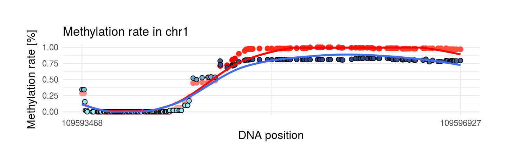
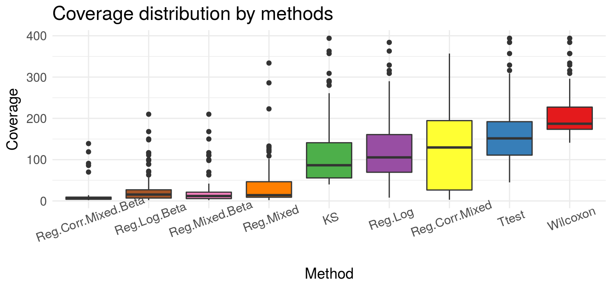

Introduction to metR
Aleksandra Brodecka, Przemysław Biecek
2017-12-05
Introduction
metR package allows comprehensive data analysis from methylation studies. By metR we can create regions, get basic statistics about them, plot methylation rate or arrange created regions from the most interesing by diffrent methods.
devtools::install_github("geneticsMiNIng/metR")
library(metR)
# useful for printing tables
library(kableExtra)
library(knitr)Initially we check if metR package includes all neccesary datasets and functions:
## [1] "OK! All functions and datasets are complet in metR package"Ok, so let’s start!
Comprehensive analysis:
Data for this example are downloaded from site: http://www.neuroepigenomics.org/methylomedb/download.html We used 4 control samples: Control1 AC, Control2 AC, Control3 AC and Control4 AC and 4 disease samples: SCZ1 AC, SCZ2 AC, SCZ3 AC, SCZ4 AC. After downloading we summed all results on the same position and chromosome separately from control and disease samples.
In this file we created analysis of DMR in chromosome 1. The code about preprocessing files can be found in https://github.com/geneticsMiNIng/metR/blob/master/examples/prep.MethylomeDB.R. Result of this script is one data.frame schizophrenia that is included in metR package. Column category indicates if data are from control samples (‘control’ value) or from disease samples (‘disease’ value).
Examples of differentially methylated regions
We show 8 regions that are results of running metR package on schizophrenia data.
1. Region with maximum coverage
This region has the largest coverage from interesting areas. We have 394 observations. This region hasn’t huge methylation diff in two samples but this difference is stable along the entire length.
| chr | start | end | meth.cov | meth.max_x | meth.max_y | meth.mean_x | meth.mean_y | meth.min_x | meth.min_y | meth.sd_x | meth.sd_y | meth.diff | quantile | source |
|---|---|---|---|---|---|---|---|---|---|---|---|---|---|---|
| chr1 | 923898 | 927566 | 394 | 0.9 | 0.86 | 0.13 | 0.01 | 0.06 | 0 | 0.06 | 0.06 | 0.12 | 0.94 | Wilcoxon |
2. Region with maximum mean of methylation rate in control sample
This region has the largest mean of methylation rate in control sample from interesting areas. We have 104 observations and mean of methylation rate is equal 1. This means that all of 104 observations have methylation rate on the level 1!
| chr | start | end | meth.cov | meth.max_x | meth.max_y | meth.mean_x | meth.mean_y | meth.min_x | meth.min_y | meth.sd_x | meth.sd_y | meth.diff | quantile | source |
|---|---|---|---|---|---|---|---|---|---|---|---|---|---|---|
| chr1 | 3086668 | 3088334 | 104 | 1 | 0.9 | 1 | 0.79 | 1 | 0.76 | 0 | 0.03 | 0.21 | 0.98 | Ttest |
3. Region with minimum mean of methylation rate in disease sample
This region has the smallest mean of methylation rate in disease sample from interesting areas. We have 210 observations and mean of methylation rate is equal 0. This means that all of 210 observations have methylation rate on the level 0!
This is reverse example to the previous one.
| chr | start | end | meth.cov | meth.max_x | meth.max_y | meth.mean_x | meth.mean_y | meth.min_x | meth.min_y | meth.sd_x | meth.sd_y | meth.diff | quantile | source |
|---|---|---|---|---|---|---|---|---|---|---|---|---|---|---|
| chr1 | 20985025 | 20986706 | 210 | 0.06 | 0 | 0.06 | 0 | 0.05 | 0 | 0.01 | 0 | 0.06 | 0.85 | Wilcoxon |
4. Region with maximum standard deviation of methylation rate in control sample
We see very interesing regions below. In this example methylation rate start from 0 in both sample and increase to 1 in control sample and 0.75 in disease sample.
| chr | start | end | meth.cov | meth.max_x | meth.max_y | meth.mean_x | meth.mean_y | meth.min_x | meth.min_y | meth.sd_x | meth.sd_y | meth.diff | quantile | source |
|---|---|---|---|---|---|---|---|---|---|---|---|---|---|---|
| chr1 | 109593468 | 109596927 | 223 | 1 | 0.83 | 0.42 | 0.36 | 0 | 0 | 0.47 | 0.39 | 0.07 | 0.87 | Reg.Log |
5. Region with maximum methylation difference in two probes
This area has only two observations but methylation difference between them is huge and equal 0.7.
| chr | start | end | meth.cov | meth.max_x | meth.max_y | meth.mean_x | meth.mean_y | meth.min_x | meth.min_y | meth.sd_x | meth.sd_y | meth.diff | quantile | source |
|---|---|---|---|---|---|---|---|---|---|---|---|---|---|---|
| chr1 | 188542753 | 188542830 | 2 | 0.82 | 0.11 | 0.8 | 0.11 | 0.78 | 0.1 | 0.03 | 0.01 | 0.7 | 1 | Reg.Mixed.Beta |
6. Region with maximum rank function
This area has maximum rank function. Rank function is based on quantile regression which uses information about number of observations in region. In this example methylation difference between probes is the biggest with respect to number of observations. Methylation difference is close to methylation difference in previous example but has more observation (11 to 2).
| chr | start | end | meth.cov | meth.max_x | meth.max_y | meth.mean_x | meth.mean_y | meth.min_x | meth.min_y | meth.sd_x | meth.sd_y | meth.diff | quantile | source |
|---|---|---|---|---|---|---|---|---|---|---|---|---|---|---|
| chr1 | 79270449 | 79270840 | 11 | 1 | 0.31 | 0.98 | 0.31 | 0.93 | 0.31 | 0.03 | 0 | 0.66 | 1 | Reg.Log.Beta |
7. Region with maximum methylation range in control sample
This region has the biggest methylation range in control sample from interesting areas. We see that methylation rate in control sample starts from 1 and decreases to 0. In disease sample methylation rate starts from level 0.9 and deacreases to 0.15. Curious observations is occuurance that at the beginning of region we see bigger methylation in control sample and at the end of region reverse case.
| chr | start | end | meth.cov | meth.max_x | meth.max_y | meth.mean_x | meth.mean_y | meth.min_x | meth.min_y | meth.sd_x | meth.sd_y | meth.diff | quantile | source |
|---|---|---|---|---|---|---|---|---|---|---|---|---|---|---|
| chr1 | 62673335 | 62676253 | 233 | 1 | 0.93 | 0.13 | 0.25 | 0 | 0.14 | 0.29 | 0.22 | 0.12 | 0.93 | Wilcoxon |
8. Region with maximum methylation range in disease sample
This region has the biggest methylation range in disease sample from interesting areas. In the middle of region we can notice that methylation rate in disease sample is equal to 0 and in control is around 0.25. At the beginning and at the end of regions methylation increases in two probes.
| chr | start | end | meth.cov | meth.max_x | meth.max_y | meth.mean_x | meth.mean_y | meth.min_x | meth.min_y | meth.sd_x | meth.sd_y | meth.diff | quantile | source |
|---|---|---|---|---|---|---|---|---|---|---|---|---|---|---|
| chr1 | 39342909 | 39345135 | 177 | 0.94 | 0.95 | 0.3 | 0.06 | 0.24 | 0 | 0.12 | 0.19 | 0.24 | 0.99 | Wilcoxon |
Comparing all methods
We use 8 methods which are available in metR package:
Ttest - t-Student test on methylation.rate
Wilcoxon - Wilcoxon test on methylation.rate
KS - Kolmogorov-Smirnov test on methylation.rate
Regression methods, where number of succsess are number of methylated citosines :
Reg.Log - standard logistic regression
Reg.Mixed - logistic regression where random effects are positions of chromosome
Reg.Corr.Mixed - logistic regression where random effects are positions of chromosome and correlation matrix between position is previously estimated and included in
metRpackage
These methods sorts regions based on p.value of grouping variable. Methods Reg.Log.Beta, Reg.Mixed.Beta, Reg.Corr.Mixed.Beta order regions based on beta coefficients of grouping variable.

We can show, that these method given very different results. The rank rate is very good if we use Ttest, Reg.Log, Reg.Mixed.Beta and Reg.Log.Beta methods. The biggest differences we see for methylation coverage. Wilcoxon test recommended regions that have the most observations ~ 200. Reg.Corr.Mixed.Beta and Reg.Log.Beta proposed smaller group - about 10 observations. If we check methylation difference, Reg.Log.Beta and Reg.Mixed.Beta present very large difference in recommended regions.
How we obtain these results?
1. Preprocess data:
library(metR)
data('schizophrenia')
control <- schizophrenia %>% filter(category == 'control') %>%
dplyr::select(-category)
disease <- schizophrenia %>% filter(category == 'disease') %>%
dplyr::select(-category)preprocessing function need two probes with specyfic columns:
kable_styling(kable(head(control, 3), "html"), position = "left",
font_size = 9, full_width = F) %>% row_spec(1:3, color = "black")| chr | poz | no | meth | unmeth | meth.rate |
|---|---|---|---|---|---|
| chr1 | 73465 | 6 | 1 | 5 | 0.1666667 |
| chr1 | 73467 | 6 | 1 | 5 | 0.1666667 |
| chr1 | 74406 | 10 | 5 | 5 | 0.5000000 |
So:
chr - chromosome name
poz - position in chromosome
no - number of reads per position
meth - number of reads with methylated cytosine
unmeth - number of reads with unmethylated cytosine
meth.rate - ratio: meth/(meth + unmeth)
data <- preprocessing(control, disease)kable_styling(kable(head(data, 3), "html"), position = "left",
font_size = 9, full_width = F) %>% row_spec(1:3, color = "black") %>%
column_spec(3, background = "#f21a1a", color = 'white')| chr | poz | prob | no | meth | unmeth | meth.rate |
|---|---|---|---|---|---|---|
| chr1 | 81412 | x | 35 | 29 | 6 | 0.8285714 |
| chr1 | 81412 | y | 76 | 66 | 10 | 0.8684211 |
| chr1 | 81442 | x | 35 | 29 | 6 | 0.8285714 |
By preprocessing we get one data frame where we have both results of methylation in position and chromosome from control and disease samples. Prob columns indicates if data are from control samples (x), or from disease samples (y).
2. Creating regions
After preprocessing we can create region. After creation they will be tested if there is significant difference between two probes in methylation rate.
We use function create_tiles_max_gap with argument gaps.length = 100. The same regions are observations that maximum difference position is gaps.length argument.
data.tiles.3 <- create_tiles_max_gap(data, gaps.length = 100)Column tiles indicates id of region in chromosome:
kable_styling(kable(head(data.tiles.3, 3), "html"), position = "left",
font_size = 9, full_width = F) %>% row_spec(1:3, color = "black") %>%
column_spec(9, background = "#f21a1a", color = 'white')| chr | poz | prob | no | meth | unmeth | meth.rate | tiles | |
|---|---|---|---|---|---|---|---|---|
| chr1.1 | chr1 | 81412 | x | 35 | 29 | 6 | 0.8285714 | 1 |
| chr1.2 | chr1 | 81412 | y | 76 | 66 | 10 | 0.8684211 | 1 |
| chr1.3 | chr1 | 81442 | x | 35 | 29 | 6 | 0.8285714 | 1 |
It’s also possible to use create_tiles_fixed_length function, where the same regions are observations that maximum difference position is gaps.length argument. If common = TRUE function creates second regions group that are min postion is (min postion + max position)/2 of k-region and max position is (min position + max position) of k+1 region.
data.tiles.1 <- create_tiles_fixed_length(data, tiles.length = 1000, common = F)
data.tiles.2 <- create_tiles_fixed_length(data, tiles.length = 1000, common = T)3. Get basic statistics
We got basic statistics about two probes by get_stats function. This is helpful if we want check coverage of created regions or methylation difference.
stats.3 <- get_stats(data.tiles.3)
kable_styling(kable(head(stats.3, 3), "html"), position = "left",
font_size = 9) %>% row_spec(1:3, color = "black") | chr | start | end | meth.cov | meth.max_x | meth.max_y | meth.mean_x | meth.mean_y | meth.min_x | meth.min_y | meth.sd_x | meth.sd_y | meth.diff | quantile |
|---|---|---|---|---|---|---|---|---|---|---|---|---|---|
| chr1 | 81412 | 81442 | 2 | 0.8285714 | 0.8684211 | 0.8285714 | 0.8684211 | 0.8285714 | 0.8684211 | 0 | 0 | 0.0398496 | 0.4672649 |
| chr1 | 81546 | 81546 | 1 | 0.8285714 | 0.8684211 | 0.8285714 | 0.8684211 | 0.8285714 | 0.8684211 | NA | NA | 0.0398496 | 0.4051596 |
| chr1 | 81698 | 81863 | 4 | 0.8285714 | 0.8684211 | 0.8285714 | 0.8684211 | 0.8285714 | 0.8684211 | 0 | 0 | 0.0398496 | 0.5333629 |
We get basic statisics about each region:
minimum and maximum position (start and end columns)
min, max, std of methylation.rate in each probe (_x from control sample and _y from disease sample)
meth.diff - absolute difference between mean of methylation rate in control and disease sample
quantile - rank function based on quantile regression which uses information about number of observations in region.
We also can join e.g stats.3 and data.tiles.3 on chromosome, start and end column and analyzing regions only if they coverage is greater than some specyfic values or other condition.
4. Finding DMR
We get interesting regions by using find_DMR function. Data argument is data.frame from create_tiles function. In methods argument we can type methods which we want to use.
# eval = F
result <- find_DMR(data.tiles.3, methods = c('Wilcoxon', 'Ttest', 'KS', 'Reg.Log', 'Reg.Mixed', 'Reg.Corr.Mixed'))Results of running function above are included in package. So now we only load data:
data('find.DMR.results')
names(find.DMR.results)## [1] "Wilcoxon" "Ttest" "KS" "Reg.Log"
## [5] "Reg.Mixed" "Reg.Corr.Mixed"This is a list of data.frames. One data.frame is result of running specyfic methods.
If we want also get results from sorting by beta coefficient we can run:
find.DMR.results <- find_DMR(data.tiles.3, methods = c('Reg.Log', 'Reg.Corr.Mixed', 'Reg.Corr.Mixed')
, p.value.log.reg = 0.001, p.value.reg.mixed = 0.001, p.value.reg.corr.mixed = 0.001)It’s better when we use results previously obtained from sorting by p.value of grouping variable because we can spare computing time:
find.DMR.results$Reg.Log.Beta <- find.DMR.results$Reg.Log %>% filter(p.value < 0.001) %>% arrange(-abs(beta.coef))
find.DMR.results$Reg.Mixed.Beta <- find.DMR.results$Reg.Mixed %>% filter(p.value < 0.001) %>% arrange(-abs(beta.coef))
find.DMR.results$Reg.Corr.Mixed.Beta <- find.DMR.results$Reg.Corr.Mixed %>% filter(p.value < 0.001) %>% arrange(-abs(beta.coef))Now we can select top 100 regions by each method:
get_top <- function(data, n, stats){
data %>% slice(1:n) %>%
left_join(stats, by = c('chr', 'start', 'end')) %>%
dplyr::select(chr, start, end, meth.cov, meth.max_x, meth.max_y
,meth.mean_x, meth.mean_y, meth.min_x,
meth.min_y, meth.sd_x, meth.sd_y, meth.diff,quantile)
}
top <- do.call(gdata::combine,lapply(find.DMR.results, get_top, n = 100, stats = stats.3))In subsection ‘Comparing all methods’ data from top were plotted.
4. Plotting methylation
Region in this subsection was plotted in Examples of differentially methylated regions above.
We use draw_methylation function with basic arguments:
data - data.frame from
preprocessingfunction or data.frame fromcreate_tiles_max_gaporcreate_tiles_fixed_lengthfunctionschr - chromosome name of region that will be plotted
start - min position of region that will be plotted
end - max position of region that will be plotted
i = which.max(top$quantile)
draw_methylation(data, top$chr[i], top$start[i], top$end[i], bind.probes = F,
size.x.dot = 3.5, size.y.dot = 2, plot.title = 13, axis.title.x = 12, axis.title.y = 12, legend.position = 'none',
axis.text.x = 9, axis.text.y = 9)
Change legend.position to get legend of logarithm reads in each position:
draw_methylation(data, top$chr[i], top$start[i], top$end[i], bind.probes = F,
size.x.dot = 3.5, size.y.dot = 2, plot.title = 13, axis.title.x = 12, axis.title.y = 12, legend.position = 'bottom',
axis.text.x = 9, axis.text.y = 9, legend.text = 7, legend.title = 8)Change bind.probes to TRUE argument if you want binding each observations between two probes:
draw_methylation(data, top$chr[i], top$start[i], top$end[i], bind.probes = T,
smooth.methylation = T,
size.x.dot = 3.5, size.y.dot = 2, plot.title = 13, axis.title.x = 12, axis.title.y = 12, legend.position = 'none',
axis.text.x = 9, axis.text.y = 9)Change smooth.methylation to FALSE if you don’t want smoothing observations:
draw_methylation(data, top$chr[i], top$start[i], top$end[i], bind.probes = T,smooth.methylation = F,
size.x.dot = 3.5, size.y.dot = 2, plot.title = 13, axis.title.x = 12, axis.title.y = 12, legend.position = 'none',
axis.text.x = 9, axis.text.y = 9)Other arguments are resposible for size of element on plots.